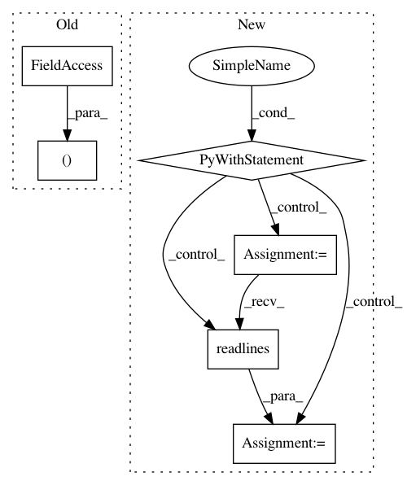

8d6e295859edc8c93a2c5dded536588cf01b55e6,local/server/streamlit/local/io.py,,echo,#,138
Before Change
write(traceback)
subheader("Stack")
start_frame = traceback.extract_stack()[0]
filename, start_line = frame.filename, frame.lineno
// write(frame)
// write(dir(frame))
// write("line", frame.line, type(frame.line))
After Change
yield
end_frame = traceback.extract_stack()[0]
assert start_frame.filename == end_frame.filename
with open(start_frame.filename) as source_file:
lines = slice(start_frame.lineno, end_frame.lineno)
source = "".join(source_file.readlines()[lines])
code.markdown(f"```\n{textwrap.dedent(source)}\n```")
// This is a necessary (but not sufficient) condition to establish that this
// is the proxy process.
_this_may_be_proxy = sys.argv[0] == "-m"
// In order to log all exceptions etc to the streamlit report after
// `import streamlit.io` we establish the proxy by calling get_delta_generator().
In pattern: SUPERPATTERN
Frequency: 3
Non-data size: 6
Instances
Project Name: streamlit/streamlit
Commit Name: 8d6e295859edc8c93a2c5dded536588cf01b55e6
Time: 2018-04-28
Author: adrien.g.treuille@gmail.com
File Name: local/server/streamlit/local/io.py
Class Name:
Method Name: echo
Project Name: recipy/recipy
Commit Name: 27aebd9429cd624a0dada25b9685ffc7af444919
Time: 2016-09-22
Author: michaelj@epcc.ed.ac.uk
File Name: integration_test/process.py
Class Name:
Method Name: execute_and_capture
Project Name: rusty1s/pytorch_geometric
Commit Name: e6ac7fa449af1e1462ee9a7f8bf08a26c9e08f84
Time: 2017-10-15
Author: matthias.fey@tu-dortmund.de
File Name: torch_geometric/datasets/faust.py
Class Name:
Method Name: